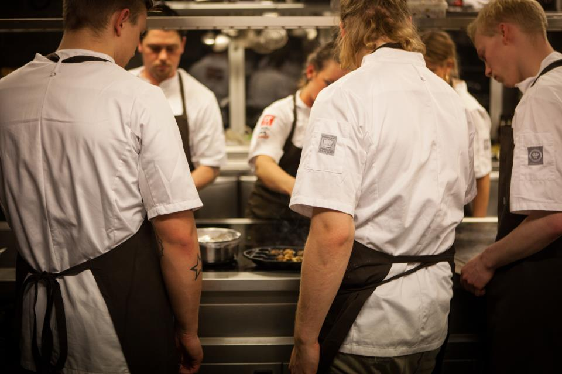
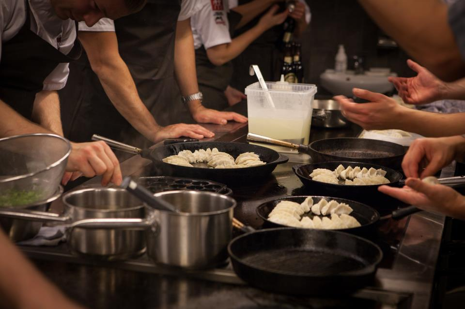
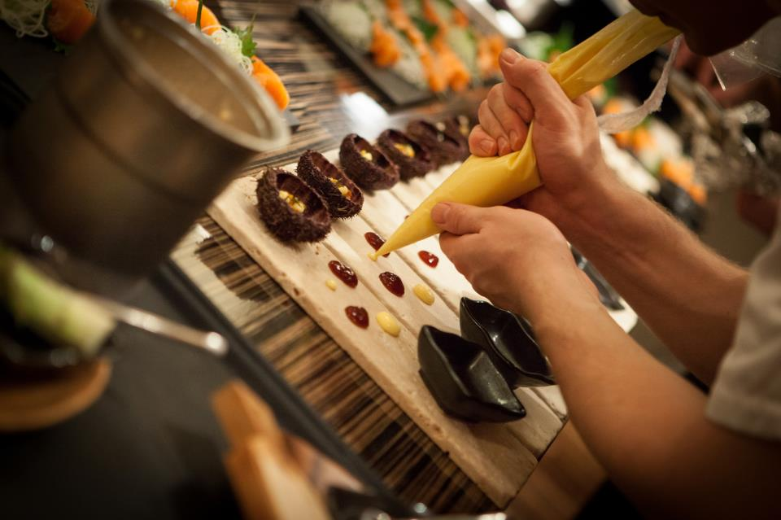

NaCL
Nordic Acadamy of Culinary Leisure
Ved NaCl Showcooking mødes en stribe af landets dygtige kokke –
heraf mange, som i dag er i stald hos Gastronomisk Innovation Management
– og præsenterer hver deres meget personlige ret for et lille publikum

Menuen er ikke nødvendigvis en afstemt samlet oplevelse, men en rejse
rundt i forskellige genrer, frit efter de deltagende kokkes fantasi.

Publikum inddrages i tankerne bag retterne, deres tilblivelse og
inviteres ofte med ud i køkkenet og bidrager til retternes
færdiggørelse.
Dorte Leck Fischer har været ankerkvinde bag kokkefælleskabet NaCl,
som blev startet i 2008 efter Nicolai Trams idé.

Læse nærmere om eventuelle arrangementer, kig igennem vores galleri
og læs om vores nyhedsbrev, samt meget mere, på hjemmesiden her.